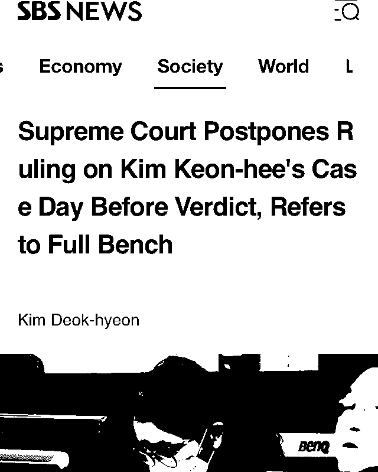
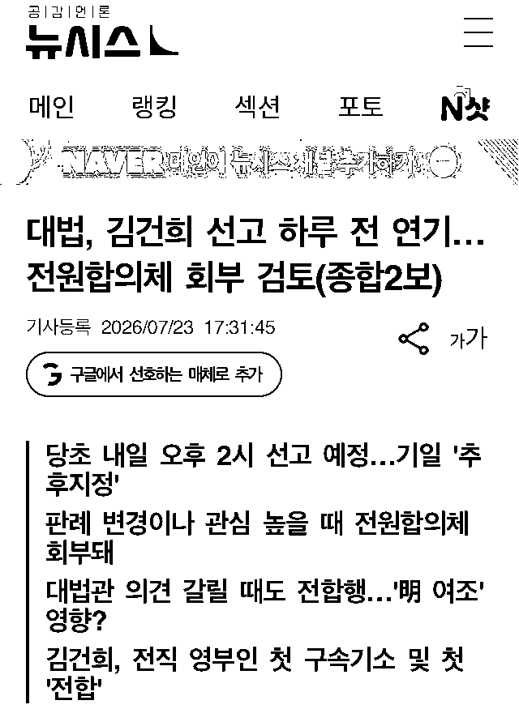
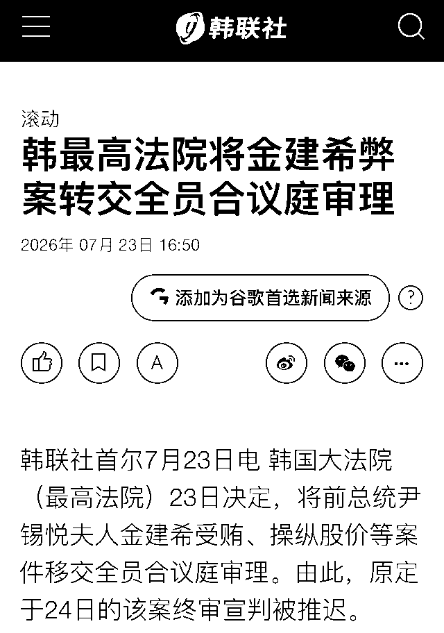

* 김건희 봉인(金建希 封印)과 無關한 글은 여기에 移動되었습니다.
26. 7. 26
下記の第10条(裁判期間等)の1に「특별검사가 공소제기한 사건의 재판은 다른 재판에 우선하여 신속히 하여야 하며, 그 판결의 선고는 제1심에서는 공소제기일부터 6개월 이내에, 제2심 및 제3심에서는 전심의 판결선고일부터 각각 3개월 이내에 하여야 한다」とあります。今回大法院がずるをしたのは3審ですから、本来は「전심의 판결선고일부터 각각 3개월 이내」つまり前審(2審)の判決宣告日から3ヶ月以内に宣告せねばならなかったのです。今回の決定によりこの法律は無視されることとなりました。
김건희와 명태균ㆍ건진법사 관련 국정농단 및 불법 선거 개입 사건 등 진상규명을 위한 특별검사 임명 등에 관한 법률
https://www.law.go.kr/법령/김건희와명태균ㆍ건진법사관련국정농단및불법선거개입사건등진상규명을위한특별검사임명등에관한법률
これは私の推測ですが、韓国でも金健希の今回大法院判決が見送られた裁判(裁判A)と今週2審が始まる裁判(裁判B)とを区別出来ていない方がおられるだろうと思います。ニュースをご覧にならない方は「金健希はシャネルカバン(샤넬가방)とグラフモッコリ(그라프목걸이)を貰ったのだ」とだけ認識されているかも知れませんね。そういった方々は今回大法院が異例的な判決の無期限延期を決定したことについて大して疑問を感じられなかったかも知れません。もしかしたら法院はこういった方々が事実を知ることがないようにわざとこういったことをややこしくしていたかも知れません。(こういった方々も事実を知ればお怒りになるでしょう) 金健希の事件についてもう一つ紛らわしいと思っているのは「三大疑惑」という表現です。金健希は3つの刑事裁判にかけられていますが、三大疑惑というのはこれを意味する言葉ではないのです。三大疑惑というのは、金健希の3つの刑事事件のうち最も初期に起訴されたもの(裁判A)が対象とする3つの容疑のことです。
- 裁判Aが扱う容疑は(1) 통일교 금품수수、(2) 도이치모터스 주가조작、(3) 명태균 여론조사 무상수수の3つであり、これが「三大疑惑」です。
- 裁判Bが扱う容疑はこれも금품수수ではあるものの、統一教会に対して便宜を図った裁判Aの容疑とは異なり、裁判Bが扱うのは企業などに便宜を図ったもので매관매직(賣官賣職)事件とも呼ばれています。
- 裁判Cは金健希が韓鶴子とともに起訴されたもので통일교 집단 입당事件と呼ばれています。これは統一教会の信徒を「国民の力」に集団入党させたというものです。これについては報道が少ないばかりか裁判の進行が非常に遅いです。
29日の欄に「서울고법, ‘특정범죄가중처벌등에관한법률위반(알선수재) 혐의’ 등 김건희 여사 외 3명 1차 공판준비기일(오후 4시)」という公判準備期日についての記載がありますが、서울고법(ソウル高法つまりソウル高等法院)が管轄ですので例の1審で懲役7年が出た(絵画や腕時計、ディオールバッグの)裁判の2審です。
(이번주 법조 일정) 7월 27일~7월 31일
https://www.lawtimes.co.kr/news/articleView.html?idxno=224000
ここにあるように今週始まるのは1審で懲役7年が出た裁判(裁判B)の2審の公判準備です。裁判Aの3審(上告審)についての情報はまだ出てきません。
20일 법조계에 따르면 서울고법 형사15-3부(고법판사 성언주·원익선·이희준)는 오는 29일 오후 4시 김 여사의 특정범죄 가중처벌법상 알선수재 혐의 사건 2심 첫 공판준비기일을 진행한다. 1심은 지난달 26일 김 여사에게 징역 7년을 선고했다. 압수된 이우환 화백의 그림 한 점, 바쉐론 콘스탄틴 시계 상자, 금거북이 보관함, 반클리프아펠 목걸이, 티파니 브로치, 디올 파우치 등 몰수와 6480만원 추징도 명했다.
김건희 '매관매직' 혐의 항소심 29일 시작…1심 징역 7년
https://mobile.newsis.com/view/NISX20260720_0003714764
念のため書いておくと金健希の宣告公判についての最新情報はこの2日ほど何も出てきていません。下記記事は今日付になっていますが、内容は23日に延期が決定された際のとほぼ同じです。
[국민뉴스] `김건희 상고심 선고` 하루전 돌연 연기..대법 `전원합의체 회부` 검토 왜?
http://m.kookminnews.com/119954
26. 7. 25
昨日紹介した記事内の漫画に描かれていた、「無罪」というプラカードを掲げながらウインクしている金健希をニタニタしながら眺めている中年男性は下記記事にある조희대という方だそうです。
李 때는 9일 속도전, 金은 선고 전날 전합…'예외 재판' 반복한 조희대, 이제 거취 답해야
https://m.kyungjeilbo.com/view/20260724160207820
この方についての記事等を収集してみます。この조희대(曺喜大)という方は韓国の大法院長であり、今回の金健希の判決延期を決めたのもこの方だそうです。
(26. 7. 24) 김건희 대법 선고 돌연 연기‥재판장은 '조희대'
https://imnews.imbc.com/replay/2026/nw2500/article/6839689_36989.html
(26. 4. 30) 오뎅 만평 ㅡ 김건희 안은 조희대..따뜻한 판결
https://m.bobaedream.co.kr/board/bbs_view/best/984521/2/11?cmt=1
(26. 2. 6) [동그라미 만평] 김건희에서 명태균까지,거꾸로 가는사법부
https://www.goodmorningcc.com/news/articleView.html?idxno=440528
(25. 11. 24) 법원 공무원 78% "조희대, 직무 수행 부적절…기본도 이행 못 해"
https://www.hankooki.com/news/articleView.html?idxno=299333
(25. 9. 20) ‘전지적 조희대 시점’ 제3의 사법쿠데타 첫 장면 [논썰]
https://www.hani.co.kr/arti/society/society_general/1219756.html
下記の掲示板には個人の意見として「(判決が出るまで)何ヶ月かかるか誰も分からない」(몇 개월 걸릴지 아무도 모름)とあります。
속보)조희대,김건희선고 하루앞두고 사실상무제한연기
https://m.bobaedream.co.kr/board/bbs_view/strange/6959352/2/8?cmt=1
先ほど引用した金健希の裁判Bについての時事通信の記事には「１億４０００万ウォン（約１５００万円）相当の絵画、５５６０万ウォン（約５８０万円）相当のネックレスなど多数の高級品」との記載がありましたが、下記の記事により詳しく書かれていますから引用してみます。
The Seoul Central District Court sentenced Kim to seven years in prison on charges of influence peddling under the Act on the Aggravated Punishment of Specific Crimes. The court also ordered that items that Kim accepted — a painting by artist Lee Ufan, an empty Vacheron Constantin watch box, a golden turtle case, a Van Cleef & Arpels diamond necklace, a Tiffany brooch and a Dior bag — be confiscated. It also ordered Kim to forfeit 64.8 million won ($42,000).
(26. 6. 26) Ex-first lady Kim Keon Hee gets seven years for influence-peddling
裁判Aについても下記記事を引用しておきます。
The Seoul High Court on Tuesday sentenced former first lady Kim Keon Hee to four years in prison, overturning her previous acquittal on charges of stock manipulation and bribery linked to the Unification Church. The court also imposed a 50 million won ($33,900) fine on Kim, whose latest sentence marked a sharp increase from the 20-month prison term handed down three months ago by the Seoul Central District Court, which had cleared her of the most serious charges. However, the appellate court upheld her acquittal on a separate charge of violating the Political Funds Act by receiving free opinion polling data from a political associate. (中略) On bribery charges, the court found Kim guilty of graft by accepting all valuables provided by figures linked to the Unification Church, including two Chanel handbags, ginseng extract and a Graff diamond necklace.
(26. 4. 28) Former first lady given four-year sentence for stock manipulation, bribery in appeals ruling
裁判Aについては株価操作等の他の容疑も対象となっているのでこのような分類は少しおかしいのですが、日本の皆様が分かりやすいように裁判Aと裁判Bを「金健希が貰ったもの」で区別してみました。
| 裁判A (2審まで判決済) |
|---|
| シャネル社のバッグ2個 (two Chanel handbags) |
| 朝鮮人参のエキス (ginseng extract) |
| グラフ社のダイアモンドネックレス (a Graff diamond necklace) |
| — 以上、統一教会関係者より受領 |
| 裁判B (1審まで判決済) |
|---|
| Lee Ufan氏の絵画 (a painting by artist Lee Ufan) |
| ヴァシュロン・コンスタンタン社の腕時計の空箱 (an empty Vacheron Constantin watch box) |
| 金製の亀の小物入れ (a golden turtle case) |
| ヴァンクリーフ&アーペル社のダイアモンドネックレス (a Van Cleef & Arpels diamond necklace) |
| ティファニー社のブローチ (a Tiffany brooch) |
| ディオール社のバッグ (a Dior bag) |
| — 以上、検事や企業関係者より受領 |
先に引用した記事の末尾に一覧表があると思いますが、尹前大統領だけでなく金健希も複数の刑事裁判にかけられています。現時点で出ている判決は仮に各裁判を記号で呼ぶことにすると裁判Aの1審判決、裁判Aの2審判決、裁判Bの1審判決の計3つです。これらはこの通りの順序(裁判Aの1審判決 → 裁判Aの2審判決 → 裁判Bの1審判決)で出ただけでなく刑罰の量(형량)が順番に上がっていっています(1年8ヶ月 → 4年 → 7年)から、これらが一連の裁判なのではないか、この懲役7年のが大法院(3審)判決なのではないか、といった噂が流れたかも知れません。各判決についての記事には管轄の法院(裁判所)名が書かれていますから、まずそれを確認してみて下さい。1審はいずれも「ソウル中央地方法院」、2審は「ソウル高等法院」、3審は「大法院」がそれぞれ管轄するはずです。また裁判Aに含まれる3大容疑のうち一つは裁判Bの容疑と表面上は似通っています。いずれにも金健希が何かを貰ったという要素が含まれています。ただ取引の相手が異なり(裁判Aでは相手方が統一教会でした)、金健希が貰った物品も異なっています。
まず裁判Aの2審判決についての記事を読んでみましょう。ここにある「ソウル高裁」とは「ソウル高等法院」のことです。取引の相手は「世界平和統一家庭連合（旧統一教会）」とありますね。また金健希が貰った物は「高級バッグやネックレス」でした。
世界平和統一家庭連合（旧統一教会）側から不正に高級品を受け取ったあっせん収財などの罪に問われた尹錫悦前大統領の夫人、金建希被告に対し、韓国のソウル高裁は２８日、懲役４年、罰金５０００万ウォン（約５４０万円）の実刑判決を言い渡した。一審は懲役１年８月。特別検察官は高裁でも一審と同様懲役１５年を求刑していた。 (中略) 金被告は、尹氏の大統領就任前後の２０２２年、教団側から高級なバッグやネックレスを受け取ったとされる。また、輸入自動車販売会社の株価操作に関与した資本市場法違反や、世論調査の無償提供を受けた政治資金法違反の罪にも問われた。
(26. 4. 28) 前大統領夫人に懲役４年 一審無罪の株価操作も認定―韓国高裁
https://www.jiji.com/sp/article?k=2026042800972&g=int
次に裁判Bの1審判決についての記事を読んでみましょう。ここにある「ソウル中央地裁」とは「ソウル中央地方法院」のことです。また取引の相手は「検事や企業関係者」です。金健希が貰ったものは「絵画やネックレス等」だといいます。
韓国のソウル中央地裁は２６日、あっせん収財の罪に問われた尹錫悦前大統領夫人の金建希被告に対し、懲役７年の実刑判決を言い渡した。特別検察官は懲役７年６月を求刑していた。金被告側は控訴する意向。 判決によると、金被告は尹大統領就任前後の２０２２年から２３年にかけ、検事や企業関係者らから、総選挙での党公認や政府ポスト登用などの請託を受けつつ、１億４０００万ウォン（約１５００万円）相当の絵画、５５６０万ウォン（約５８０万円）相当のネックレスなど多数の高級品を受け取った。 判決は起訴された罪状全てを有罪と認定。「大統領の配偶者として、どんな高官よりも国政運営に多大な影響力を及ぼし得る地位にあった」と指摘し、「求められる社会的責務を無視したまま、地位を私的な利益追求の手段に活用した」と批判した。
(26. 6. 26) 韓国地裁、金建希被告に懲役７年の実刑判決 前大統領妻、人事巡りあっせん収財
https://www.jiji.com/sp/article?k=2026062601031&g=int
下記の記事によると金健希の大法院判決は関連する法律上、2審判決が下された日から3ヶ月以内に下す必要があるため本来は7月28日が宣告期限となるようです。ただ今回の延期は大法院が特例として実施したものなのでこのルールも無視されるのかも知れません。
내란 특검법 제11조 제1항과 김건희 특검법 제10조 제1항은 ‘2·3심에서는 전심의 판결 선고일부터 각각 3개월 이내에 판결을 선고해야 한다’는 규정을 두고 있다. 해당 조항이 그대로 적용될 경우 김씨 사건은 7월28일, 윤 전 대통령 사건은 7월29일이 각각 상고심 선고 시한이다.
(26. 5. 6) ‘쌍방 상고’ 윤석열 부부, 대법원行… 이르면 7월말 확정판결
https://m.segye.com/view/20260505511125
26. 7. 24
私が的外れなことを書いていた可能性もありますが、なぜか分かりませんが私は大法院もそこまで長くは宣告を延期出来ないような気がしています。
김건희 앞에만 서면 흔들리는 사법
https://www.mindlenews.com/news/articleView.html?idxno=21526
日本語の記事も出ていました。ここに「大法院は金被告の事件を全員合議体に付託した理由を明らかにしていない」とありますが、私はやはり判事達が報復を受けるリスクを分散させる目的もあるのではと想像しています。
尹錫悦（ユン・ソクヨル）前大統領の妻、金建希（キム・ゴンヒ）氏のドイツモーターズ株価操作事件、政治ブローカーのミョン・テギュン氏からの世論調査無償提供事件、世界平和統一家庭連合（旧統一教会）からの金品受領事件の上告審が、大法官全員が参加する全員合議体に付託された。２４日に予定されていた大法院の判決言い渡しも延期された。 大法院は２３日、２４日午後２時に予定していた金被告の判決言い渡し期日を延期すると明らかにした。当初は大法官４人で構成される第二小法廷（主審・朴英在大法官）が判決を言い渡す予定だったが、前日になって全員合議体への付託が決まり、判決期日も無期限で延期された。 大法院は大半の事件を小法廷で審理し、判決を言い渡すが、大法官の間で意見が一致しない場合や判例を変更する必要がある場合、社会的に重要な事件だと判断した場合には、全員合議体で審理して判決を言い渡す。ただし、大法院は金被告の事件を全員合議体に付託した理由を明らかにしていない。
大法院、金建希氏の上告審を全員合議体に 判決言い渡し延期
https://www.donga.com/jp/article/all/20260724/6319672/1
延期された金健希の宣告公判が結局いつ開かれるかについてはまだ情報が出ていないようですが、皆様も下記を定期的にチェックなさってみて下さい。
https://m.news.nate.com/search?q=김건희
https://anissatta.github.io/home-project/kim/
韓国の方々は馬鹿げていると思われるでしょうが、こういったことについて書いておかないと無知な方々が攻撃してくる可能性もあるので説明しておきます。下記の記事にある写真を見て「護送車の助手席に乗った金健希の姿が捕捉されたのだ」と思われた日本人の方もおられたかも知れません。これは実際の人影ではなく、当時集会を行なっていた尹前大統領の支持者が掲げたプラカードが偶々窓ガラスに写っていただけなのです。そもそも金健希が護送車の助手席に乗ることはないだろうという事は昨日引用した去年の記事からも推測出来るかと思います。
韓国前ファーストレディー、特別検察官の初聴取で供述拒否…約8時間で終了
https://www.afpbb.com/articles/-/3645276
下記記事にそのプラカードの写真が出ていますから、比較してみて下さい。
'관저이전 의혹' 김건희, 종합특검 피의자 조사 출석
https://m.news.nate.com/view/20260722n08188
https://www.newsis.com/view/NISI20260722_0021372893
下記に今日開かれる公判の一覧がありますから、皆様もご自身で調べてみて下さい。
▲오전 9시50분 '김건희 집사게이트' 조영탁 IMS모빌리티 대표 외 4명 항소심 2차공판, 서울고법 형사6-3부, 302호 (事件名に'김건희'とありますが被告人は「조영탁 IMS모빌리티 대표 ほか4名」です)
▲오전 10시 '내란 중요임무 종사 혐의' 여인형 전 국군 방첩사령관 외 5명 15차공판, 서울중앙지법 형사26부, 103호
▲오전 10시 '주가 조작 혐의' 삼부토건 전직 임원 이일준 전 회장·이응근 전 대표·이기훈 29차공판, 서울중앙지법 형사34부, 408호 (株価操作事件とありますが被告人は「삼부토건 전직 임원 이일준 전 회장·이응근 전 대표·이기훈」です)
▲오전 10시 '대장동 개발 특혜 혐의' 화천대유자산관리 대주주 김만배씨 외 4명 항소심 8차공판, 서울고법 형사6-3부, 302호
▲오전 10시 ‘헌법재판관 미임명 혐의’ 한덕수·최상목·김주현·정진석·이원모 19차공판, 서울중앙지법 형사33부, 417호
▲오전 10시 '이종섭 호주대사 도피 의혹' 윤석열 전 대통령 외 5명 9차공판, 서울중앙지법 형사22부, 358호
▲오후 2시 '채상병 순직 책임' 업무상 과실치사 혐의 임성근 전 해병대 1사단장 외 4명 항소심 6차공판, 서울고법 형사4-3부, 403호
▲오후 2시 '1억 공천헌금 의혹' 강선우 무소속 의원·김경 전 서울시의원 5차공판, 서울중앙지법 형사1단독, 513호
▲오후 2시10분 '장애인 입소자 성학대 혐의' 색동원 시설장 13차공판, 서울중앙지법 형사29부, 519호
▲오후 5시 '근로자퇴직급여 보장법 위반 혐의' 엄성환 전 CFS 대표 외 2명 3차공판, 서울중앙지법 형사27부, 509호
[오늘의 주요일정]법조(7월24일 금요일)
https://mobile.newsis.com/view/NISX20260723_0003721129
信じられませんが、また延期されたようです。下記をお読みになってみて下さい。
Supreme Court Postpones Ruling on Kim Keon-hee's Case Day Before Verdict, Refers to Full Bench
https://mnews.sbs.co.kr/english/endPage.do?newsId=N1008671971
Supreme Court refers ex-first lady case to full bench, postpones ruling
Supreme Court Postpones Ruling in Ex-First Lady’s Appeals Trial, Refers Case to Full Bench
https://world.kbs.co.kr/service/news_view.htm?lang=e&Seq_Code=203098
'김건희 상고심' 대법 전원합의체 회부…선고 전날 이례적 연기(종합2보)
https://www.yna.co.kr/view/AKR20260723142452004
대법, 김건희 선고 하루 전 연기…전원합의체 회부 검토(종합2보)
https://mobile.newsis.com/view/NISX20260723_0003720994
대법원, 김건희 사건 전원합의체 회부…선고 무기한 연기
https://www.mk.co.kr/news/society/12105619
대법, 김건희 '명태균 여론조사' 선고 연기... 전원합의체 회부
https://www.chosun.com/national/court_law/2026/07/23/4M4FACRV65EOXPLTHRUMT5WTC4/
하루 앞두고 전격 연기...'명태균 여론조사' 법리 재검토?
https://m.ytn.co.kr/news_view.php?key=202607231850247099
‘김건희 상고심’ 대법 전원합의체로…선고 연기
https://news.kbs.co.kr/news/mobile/view/view.do?ncd=8618856
[속보]대법원, 김건희 주가조작 등 3대 의혹 전원합의체 회부…선고기일 연기
https://www.khan.co.kr/article/202607231529001
韩最高法院将金建希弊案转交全员合议庭审理 -- 韩国大法院（最高法院）23日决定，将前总统尹锡悦夫人金建希受贿、操纵股价等案件移交全员合议庭审理。由此，原定于24日的该案终审宣判被推迟
https://m-cn.yna.co.kr/view/ACK20260723002600881



(7. 23)
저는 내일 대법원이 김건희의 여론조사 수수 혐의를 유죄로 인정할지보다 신종오 판사가 목숨을 쓰고 유죄로 인정하신 주가조작 혐의에 대한 판단이 유지될지에 대해 관심이 있어요.
26. 7. 23
JTBCが紛らわしい記事を出していますが、私のこれまでの説明を理解していれば明日宣告されるのは3つの容疑についてであり、JTBCはそのうち1つだけをピックアップしていると分かるはずです。
今朝JTBCが下記の記事を出していましたが、これによると明日大法院が判決を下すのは金健希の「정치브로커 명태균 씨로부터 무상 여론조사를 받은 혐의」(政治ブローカー明泰均氏から無償世論調査を受けた容疑)についてだといいます。
‘무상 여론조사’ 김건희 상고심 내일 선고…1·2심 무죄 유지될까
https://news.jtbc.co.kr/article/NB12309724
https://m.news.nate.com/view/20260723n04074
ここで今朝紹介した記事をもう一度読んでみて下さい。
도이치모터스 주가조작과 통일교 금품수수, 명태균 여론조사 수수 등 김건희 씨의 이른바 '3대 의혹' 사건의 상고심 판단이 내일(24일) 내려집니다. (ドイツモータース株価操作と統一教会 金品収受、明泰均 世論調査等の金健希氏のいわゆる「3大疑惑」事件の上告審判断が明日(24日)下されます)
(中略)
앞서 1심은 통일교 금품수수 의혹 일부만 유죄로 인정해 징역 1년 8개월을 선고했지만, 2심은 통일교 의혹 전체와 도이치모터스 주가조작 혐의 일부를 유죄로 판단해 징역 4년에 벌금 5천만 원을 선고했습니다. (これに先立ち、1審は統一教会 金品収受疑惑の一部だけを有罪と認定し懲役1年8ヶ月を宣告しましたが、2審は統一教会疑惑の全体とドイツモータース株価操作容疑の一部を有罪と判断し懲役4年、罰金5千万ウォンを宣告しました)
대법원 선고는 애초 지난 16일에 진행될 예정이었습니다. (大法院の宣告は当初16日に行われる予定でした)
그러나 김건희 특검이 김 씨의 1·2심에서 무죄가 나온 명태균 여론조사 수수 혐의에 대해 유죄로 판단한 윤석열 전 대통령의 1심 판결문을 검토해 달라고 요청했고, 이후 대법원은 선고를 미뤘습니다. (しかし金健希特検(金健希の事件を担当する特別検察)が金氏の1・2審で無罪が出ていた明泰均 世論調査 収受容疑について有罪と判断した尹錫悅 前大統領の1審判決文を検討せよと要請し、この後大法院は宣告を延期していました)
대법, 내일 김건희 도이치 주가조작 등 3대 의혹 선고
https://m.ytn.co.kr/news_view.php?key=202607230000153101
問題のJTBCの記事は「明日の判決は金健希の明泰均 世論調査 収受容疑についてのものだ。この容疑について1審と2審は無罪が出ている。明日は有罪になるのかな」と述べている訳ですが、これは間違いではないものの事実の一部分を強引に切り取った、まるで無知な日本の皆様を騙して満足させるために書かれた記事のようにも思えなくもありません。YTNの記事の下記の部分と照らし合わせてみれば、JTBCが述べていたのが明日判決が下される事件のどの部分にあたるかがお分かりになるはずです。
도이치모터스 주가조작과 통일교 금품수수, 명태균 여론조사 수수 등 김건희 씨의 이른바 '3대 의혹' 사건의 상고심 판단이 내일(24일) 내려집니다. (ドイツモータース株価操作と統一教会 金品収受、明泰均 世論調査等の金健希氏のいわゆる「3大疑惑」事件の上告審判断が明日(24日)下されます)
(中略)
그러나 김건희 특검이 김 씨의 1·2심에서 무죄가 나온 명태균 여론조사 수수 혐의에 대해 유죄로 판단한 윤석열 전 대통령의 1심 판결문을 검토해 달라고 요청했고, 이후 대법원은 선고를 미뤘습니다. (しかし金健希特検(金健希の事件を担当する特別検察)が金氏の1・2審で無罪が出ていた明泰均 世論調査 収受容疑について有罪と判断した尹錫悅 前大統領の1審判決文を検討せよと要請し、この後大法院は宣告を延期していました)
明日大法院にて開かれる金健希の宣告公判がいつ頃終わるかについてはまだ分かりませんが、下記の1審と2審の宣告公判の録画映像をご覧になれば1審が40分程度、2審が90分程度かかっているのがお分かりになるかと思います。明日の公判も午後2時に始まるはずですが、裁判長が宣告公判開始を宣言し、被告人(金健希)が入場し、裁判長が判決を下す上でのポイントについて一つ一つ説明をするのは1審、2審と同様だと思います。主文(被告人金健希を懲役X年、罰金Yウォンに処す)が読み上げられるのはその後になります。この主文が出るまでにニュース速報が延々と流れるのですが、これは上の「判決を下す上でのポイント」についてのものであり、以前使った喩えで説明すると野球の実況中継のようなものなのです。(「3回表、大谷1安打」のような) 最終的な勝敗を伝えるニュース(「広島優勝」のような)は午後2時から数時間経った後に出る可能性もあります。このことを覚えておいて下さい。
下記は昨日の金健希の取り調べに関するニュース映像ですが、使用されている映像は去年法廷で撮影されたものと瓜二つです。下記の2つの映像を比較してみて下さい。どちらの映像でも金健希の右側に座っている弁護人は薄い紫色、左側は水色のネクタイをされていますね。
https://youtube.com/shorts/xLOA6hS8Lww
https://youtube.com/shorts/1Ij0qBSjATE
下記の記事にある映像も去年のものを再利用しています。
[속보] 김건희, 2차 종합특검 출석…'관저 특혜' 조사
https://m.yonhapnewstv.co.kr/news/MYH20260722093825XNZ
https://youtube.com/shorts/1XF8TtYoU64
そもそも昨日金健希が出席したのは検察の事務所であり、法廷ではないのですからこういった室内の映像が出てくる訳がないのです。金健希の姿が捕捉されるとしたら護送車から降りて事務所に向かうまでの間になると思いますが、昨日の映像にあったように護送車は地下に入っていましたのでそれも出てこないはずです。下記記事の見出しにも「護送車に乗り地下から」(호송차 타고 지하로)とありますね。本文には「出席時の様子は外部に公開されなかった」(출석 모습은 외부에 공개되지 않았다)とあります。
구속된 김 여사는 이날 법무부 호송차를 타고 지하를 통해 조사실로 곧장 향했다. 출석 모습은 외부에 공개되지 않았다. 특검팀 사무실 앞에는 20여명의 지지자가 모여 "여사님 힘내세요", "여사님을 석방하라" 등 구호를 외쳤다.
'관저 이전 의혹' 김건희, 특검 조사 출석…호송차 타고 지하로
https://www.yna.co.kr/view/AKR20260722059100004
ではもし金健希が地上から取り調べに出席した場合、どのような映像が出てくるかというと下記に去年の例がありますからこれを参考にして下さい。
(25. 8. 6) 김건희 특검 출석 “저같이 아무것도 아닌 사람이 심려 끼쳐 죄송”
https://www.joongang.co.kr/article/25357104
ちなみにこの時の「何でもない人間」(아무 것도 아닌 사람)という発言は話題となり下記のような漫画の題材ともなりました。
https://www.hani.co.kr/arti/cartoon/hanicartoon/1211971.html
https://www.hani.co.kr/arti/cartoon/hanicartoon/1212192.html
https://www.hani.co.kr/arti/cartoon/hanicartoon/1213160.html
下記記事にもある通り明日大法院(「대법」は「대법원」の縮約形です)にて金健希に対する判決が下されます。
대법, 내일 김건희 도이치 주가조작 등 3대 의혹 선고
https://m.ytn.co.kr/news_view.php?key=202607230000153101
26. 7. 22
下記の映像を確認したところ、金健希が乗った護送車は地下駐車場のような所に入っていますので恐らく姿が捕捉されることはないと思います。これは尹前大統領についてかつてよく行われていた方式です。
例: (25. 4. 18) 법원, 윤 2차 공판도 지하주차장 비공개 출석 허용
https://m.ytn.co.kr/news_view.php?s_mcd=0103&key=202504181139152875
下記に今日撮影された金健希が乗った護送車の写真が出ています。
종합특검, 김건희 첫 피의자 소환···‘관저 특혜 이전’ 관련
https://www.khan.co.kr/article/202607221031011
'관저 이전' 의혹 김건희, 2차 특검에 피의자 신분 첫 출석
https://www.chosun.com/national/court_law/2026/07/22/UBY5M3ALCJFE7K6N2RADL4I2CQ/
[속보] ‘관저 이전 의혹’ 김건희, 종합특검 첫 피의자 출석
https://www.hani.co.kr/arti/society/society_general/1269355.html
下記はその映像です。尹前大統領の支持者達が「キムゴンヒ(ゴニ)」と音頭をとっていますね。
https://www.youtube.com/live/IhI_dOK4f64
金健希が「健康上の理由」から取り調べへの出席を2度も見送ったということについて皆様がどのようにご覧になったかは分かりませんが、金健希は現在拘置所にいますので、取り調べが検察側の拘置所訪問によってなされるものでなければ金健希は今日拘置所の護送車のようなもの(以前写真が公開されていました)に乗って検察の事務所に行かなくてはなりません。その際に手錠や足輪(位置情報を記録するものだと思いますが)を付けられる可能性もあるのでそういった姿を捕捉されるのが嫌だったからだと私は見ています。もちろん拘置所にいるという事実だけで金健希が悪人であると断定は出来ませんが、日本の皆様の中にはこのことすらご存知でない方もおられるでしょうから、説明しました。明後日には大法院(最高裁)が金健希に判決を下しますから、全世界が金健希は悪人だったと納得するかと思います。
補足1 拘置所(法務部)の護送車とは下記記事にあるようなものです。
'운명의 날' 1심 선고 위해 법원 도착한 김건희 호송차량 [TF사진관]
https://m.tf.co.kr/read/photomovie/2286937.htm

補足2 足輪とは下記記事にて'electronic ankle monitor'と描写されているものです。
South Korea’s ex-first lady spotted in wheelchair with ankle monitor
補足3 下記に金健希が収監されている拘置所のイメージ図があります。
[그래픽] 김건희 여사 수감 서울남부구치소 독방 내부
https://www.yna.co.kr/view/GYH20250813000300044

下記によると延期されていた金健希に対する取り調べは今日実施されるとのことです。
종합특검, 오늘 '관저 이전 특혜 의혹' 김건희 소환
https://m.ytn.co.kr/news_view.php?key=202607220159432580
26. 7. 21
金健希についての噂が伝言ゲームのようにして広まっていく過程である誤解が生じた可能性もあるかと思いますが、金健希というのは他殺型の人間であり以前金健希に対して1審より重い判決を下した判事が不審死を遂げたこともありました。死因についてははっきり分からないものの、「金ゴニ(健希)は判事を自殺に追い込む金ゴミである」とでも覚えておいて下さい。


‘김건희 주가조작 재판장’ 신종오 판사, 법원 경내서 사망…장례식장은 침통
https://www.khan.co.kr/article/202605061534001
South Korean judge who hiked ex-first lady’s jail sentence found dead
https://www.japantimes.co.jp/news/2026/05/06/asia-pacific/crime-legal/south-korea-judge-dead/
金建希股价操纵案法官身亡现场发现遗书
https://www.news.cn/world/20260506/2c6cb556a405425b8abb752cf977636e/c.html
ソウル高裁の判事が死亡 尹前大統領妻の控訴審裁判長＝遺書見つかる
https://m-jp.yna.co.kr/view/AJP20260506000900882
日本にはまだ「金健希に対する大法院(最高裁)の判決が今月24日に下される」ということをご存知でない方もおられるかも知れません。ホームページを再開したのでより多くの方々がこれをご覧になると信じ、下記を再掲します。


韓国・前ファーストレディーの上告審、24日に判決…最高裁が生中継へ
https://www.afpbb.com/articles/3644395
https://news.infoseek.co.jp/article/koreawave_3644395/
Supreme Court Postpones Kim Keon-hee 'Stock Price Manipulation' Appeal Sentencing to 24th... Reviewing Yoon's Guilty Verdict
https://www.asiae.co.kr/en/article/2026071511443182502
金建希涉贪受贿案最终审判 延期至本月24日
https://www.8world.com/world/kim-keon-hee-3218266
下記記事によると当初19日に予定されていて「健康上の理由」により21日に延期された金健希に対する取調べはまた「健康上の理由」により今度は22日に延期されたそうです。
종합특검, 김건희 첫 소환 22일로 또 연기…"金 건강상 사유"
https://mobile.newsis.com/view/NISX20260720_0003715504
26. 7. 20
以前「金健希の宣告公判の前日に3日使用可能なSIMを買う」と書きましたが、これが原因で何らかの噂が流れた可能性もあるので今日もう一度見に行って5日か7日のがあったら先に買ってしまおうかと思います。あと大法院(最高裁)が審理する3審(上告審)には結審公判がそもそも存在しない可能性もあります。以前尹前大統領の特殊公務執行妨害等の事件について大法院が懲役7年を宣告しましたが、それに先だって結審公判が開かれたでしょうか。もし開かれていた場合、この懲役7年宣告についての記事には「検察は懲役X年を大法院に求刑していた」といった一文があったはずです。私も後でWifiスポットで調べてみます。
(Wifi spot에서) 우선 이걸 읽어 봅니다 (下記の記事にもあるように上告審(3審)というのは1-2審とは異なる性格のものであるようです。2審の判決に不服がある場合に上告が可能となるのですが、上告審にて「上告棄却」された場合2審の判決がそのまま確定されるとあります):
상고심의 의의와 절차: 최후 심판의 이해
https://m.blog.naver.com/PostView.naver?blogId=lawjk3877&logNo=223793075128
尹前大統領についての報道に「재판소원」という用語が出てくるのでこれについても調べてみます。
2026. 3. 11.부터 대법원의 판결에 대해서도 불복을 청구할 수 있는 새로운 제도인 “재판소원” 제도가 시행되고 있습니다. (중략) 재판소원은 쉽게 말해 재판이 헌법상 정당했는지, 헌법을 침해한 것은 아닌지를 규명하는 절차라고 보시면 됩니다. (중략) 재판소원을 고려하고 계신 분들이 염두에 두셔야 할 점은 위 요건들이 매우 까다로운 요건들이라는 것으로서, 단순히 법원이 사실관계를 잘못 판단했다거나 법리해석 내지 적용을 잘못했다는 등의 사유들 정도로는 확정판결을 뒤집기 어렵다는 것입니다. (중략) 어떠한 사유들이 있으면 재판소원이 가능한지 감이 잘 안오실 것 같은데, 예를 들어 형사사건에 있어서는 아래와 같은 상황이 발생하면 재판소원을 검토해볼 수 있을 것입니다.
▯피고인이 신청하는 중요 증인신청을 기각하거나 진술기회를 충분히 주지 않는 등 피고인의 방어권을 침해한 경우 ▯재판과정에서 변호인조력권, 반대신문권 등을 침해한 경우 ▯위법수집증거배제의 원칙에 반하여 확보된 증거가 유죄판결의 근거가 된 경우 ▯위헌적인 법률을 적용하여 판결한 경우 ▯반대증거가 존재함에도 피해자 진술의 신빙성을 과도하게 인정하는 등 사실상 “무죄추정”이 아닌 “유죄추정”에 입각하여 재판이 진행된 경우
재판소원 핵심정리! 쉽게 설명해드립니다!
https://m.blog.naver.com/bestkid7/224214573373
尹前大統領は最近大法院が判決を下した事件について재판소원をしなかったという事ですが、よく分かりませんがそもそも尹前大統領の事件は재판소원の対象とはなりようがなかったのではないか、という気もします。この方が奇妙な言動をなさることはこれまでもよくあった事です。
[단독] 尹, ‘징역 7년’ 체포방해 사건 재판소원 안 하기로
https://www.chosun.com/national/court_law/2026/07/19/OPVBGBA42NH4RNSKETNJC4MYEQ/
話を上告審(3審)に戻しますが、ここに「４月に懲役７年を言い渡した二審判決が確定した」とあるように上告審というのはあくまでも2審のやり直しですから、上告審でまた新たに求刑がなされるのではないようです。この尹前大統領の例では「被告側・特別検察官側双方の上告を棄却」したので尹前大統領側の訴え(無罪)でも、検察側の訴え(2審での求刑量)でもなく2審でソウル高等法院が下した判決がそのまま確定しました。
韓国最高裁は９日、「非常戒厳」宣言を巡る捜査を妨害したとして、特殊公務執行妨害などの罪に問われた前大統領の尹錫悦被告（６５）について、被告側・特別検察官側双方の上告を棄却した。４月に懲役７年を言い渡した二審判決が確定した。尹被告は複数の裁判を抱えるが、最高裁が判断を下すのは初めて。一審は懲役５年としたが、二審は一審で無罪だった罪の一部も有罪と認め、懲役７年の判決を下した。最高裁は二審判決に「法理の誤解などの誤りはない」と指摘した。
韓国・尹錫悦前大統領、懲役７年が確定 戒厳巡る捜査妨害―最高裁
https://www.jiji.com/sp/article?k=2026070900896&g=int
では金健希の2審がどうだったかというと、検察側の求刑は「一審と同様懲役１５年」でしたが、高等法院が下した判決は懲役4年でした。これについても金健希側、検察側がそれぞれ上告しましたが、上告審で大法院が金健希側・検察側双方の上告を棄却した場合は懲役4年が、検察側の上告を受け入れた場合は懲役15年か分かりませんがより重い刑が、(ありえませんが)金健希側の上告を受け入れた場合は無罪が、それぞれ確定するでしょう。金健希の場合も大法院が頭がおかしくなって無罪判決を下さない限り재판소원は起こらないと思います。
(2026. 4. 28) 前大統領夫人に懲役４年 一審無罪の株価操作も認定―韓国高裁
https://www.jiji.com/sp/article?k=2026042800972&g=int
下記記事に「特別検察官は懲役７年６月を求刑していた」とありますが、これは金健希の別の事件です。(最近1審判決が下された매관매직事件)
(2026. 6. 26) 韓国地裁、金建希被告に懲役７年の実刑判決 前大統領妻、人事巡りあっせん収財
https://www.jiji.com/sp/article?k=2026062601031&g=int
上告審は法律審(법률심)とも呼ばれており大法院が事実関係を再度調べることはないとのことですが、上告審に結審公判がないことは下記のページに書かれている公判期日一覧からも確かめることが出来ると思います。
https://namu.wiki/w/김건희-명태균-건진법사%20게이트/재판/김건희
대법원이 심리하는 3심인 상고심엔 결심공판(구형)이 없을 수도 있는데요. 매관매직 사건에 대해선 결심공판이 있었지만 이건 그때 아직 1심 단계였습니다.
26. 7. 19
(Wifi spot에서) これの24日(24일)の部分を見てみて下さい。「김건희 여사 선고 등」は「金健希 女史 宣告 等」です。
대법원 2부 선고(오후 2시, 제1호 법정)
※‘자본시장과금융투자업에관한법률위반 등 혐의’ 김건희 여사 선고 등
(이번주 법조 일정) 7월 20일~7월 24일
https://www.lawtimes.co.kr/news/articleView.html?idxno=223681
下記記事の見出しにもあるように金健希の今回判決が下る事件は「3大疑惑」(3대 의혹)から成るものです。昨日述べたようにこれは(1)統一教会側から金品を受け取った疑惑(통일교 금품수수)、(2)ドイツモータース株価操作疑惑(도이치모터수 주가조작)、(3)世論調査結果を受け取った疑惑(명태균 여론조사 수수)です。
(下記の通り宣告公判が始まるのは24日午後2時です)
19일 법조계에 따르면 대법원 2부(재판장 권영준·주심 박영재 대법관)는 24일 오후 2시 김 여사의 자본시장법 위반 등 혐의 사건을 선고한다. 이른바 '3대 의혹'으로 불리는 사건으로, 민중기 특별검사팀이 작년 9월 김 여사를 기소한 후 약 11개월 만에 내려지는 상고심 선고다. 선고 공판은 대법원이 자체 장비로 촬영한 뒤 방송사에 실시간 송출하는 방식으로 생중계된다.
(下記は今回の事件に含まれる3つの容疑についての説明です)
김 여사는 2022년 4∼7월 건진법사 전성배씨를 통해 윤영호 전 통일교 세계본부장으로부터 교단 지원 청탁을 받고 6천200만원 상당의 그라프 다이아몬드 목걸이, 총 2천만원 상당의 샤넬 가방 두 개를 수수한 혐의(특가법상 알선수재)를 받는다. 2010년 10월∼2012년 12월 도이치모터스 주가조작에 가담해 8억1천만원 상당 부당이득을 챙긴 혐의(자본시장법 위반), 2021년 6월∼2022년 3월 윤석열 전 대통령과 공모해 명태균씨로부터 2억7천만원 상당의 여론조사 결과를 받은 혐의(정치자금법 위반)도 있다.
(下記は昨日私が説明した通りの内容となっています。つまり1審は有罪・無罪・無罪、2審は有罪・有罪・無罪でどちらも3つ目の容疑である世論調査については無罪としています)
1심은 통일교 금품수수 혐의만 일부 유죄로 인정해 징역 1년 8개월을 선고했다. 2심은 이를 전부 유죄로 뒤집고 도이치모터스 주가조작 가담 혐의도 일부 유죄로 봐 형량을 징역 4년과 벌금 5천만원으로 늘렸다. 다만 명태균 여론조사 수수 혐의는 1심과 같이 무죄로 판단했다.
(下記はこの世論調査事件について尹前大統領の判例が出たので金健希の事件を担当する検察が裁判所にこれを含めて再検討せよと延期を申請し、結果延期がなされたというものでこれも昨日述べた通りです)
대법원 선고는 당초 지난 16일로 잡혔다가 특검팀의 연기 신청이 받아들여져 24일로 미뤄졌다. 특검팀은 김 여사의 여론조사 수수 혐의 공범인 윤 전 대통령에게 유죄를 선고한 서울중앙지법 형사합의33부(이진관 부장판사) 판결문을 검토해달라며 대법원에 김 여사 선고 연기를 신청했다.
내주 김건희 '3대 의혹' 상고심…최태원 '세기의 재산분할' 선고도
https://www.yna.co.kr/view/AKR20260718040900004
今日予定されていた金健希に対する(他の容疑に関する)取り調べは21日に延期されています。
관저 이전 관련 금품 수수 및 외압 행사 등 의혹을 받는 김건희 여사의 권창영 2차 종합특별검사팀 출석 일정이 애초 오는 19일에서 21일로 연기됐다.
(7. 16) '관저 이전' 김건희 특검 출석 19→21일 연기…"건강상 이유"
https://www.yna.co.kr/view/AKR20260716157600004
(7. 18)
金健希の今回判決が出る事件というのは複数の容疑の複合体のようなものであり、判決が延期される原因となった容疑というのはその一部です。もしかするとこの一部の容疑だけ取り上げて金健希は無罪になるといった噂を流しておられる方がおられるかも知れません。容疑が3つあるとするとこの方が仰っているのは判決が「有罪•有罪•無罪」、「無罪•有罪•無罪」、「有罪•無罪•無罪」、「無罪•無罪•無罪」のいずれかになるだろうということですが、この内金健希が無罪となるのは「無罪•無罪•無罪」のケースのみであり、私はこれはありえないと思っています。
これについて明日調べてみるつもりですが、金健希の今回の事件の容疑というのは(1)統一教会側から賄賂をもらって便宜を図った容疑、(2)ドイツモータースの株価操作の容疑、(3)世論調査についての容疑、の3つであり、一審判決はこのうち(1)のみを有罪とするつまり「有罪•無罪•無罪」の判決だったと思います。それが二審で「有罪•有罪•無罪」となったので刑がより重くなりました。今回(3)世論調査についての容疑について尹前大統領の判例が出たので検察がそれを審理させようと延期申請を出したのだと思いますが、結局「有罪•有罪•無罪」になる可能性もあります。この延期期間中に金健希について同情を強いるような記事が出る可能性もあるかと思いますが、金健希がゴミだというのは私にとっては固定の考え方なので誰かがいくら頑張ってもこれを変えようはありません。
26. 7. 18
(Wifi spot에서) 今回金健希の宣告公判についてのフェイク映像が流れたのだとすると、それは恐らく下記の映像のうち1つか複数を使用して作られたものだと思われます。今日はWifiが使える所に行ってこの件について詳しく調べてみるつもりですが、日本の皆様が事実をお知りになればひどくがっかりされるだろうと思います。今回もしフェイク映像が流れたのだとすると、そのためかも知れませんね。
(2025/9/24) 株価操作等事件 初公判
https://youtube.com/shorts/1XF8TtYoU64
https://youtube.com/shorts/1Ij0qBSjATE
(2025/11/19) 株価操作等事件 第10回 公判
https://www.youtube.com/live/frWFHrD6Xpc
(2025/12/3) 株価操作等事件 1審 結審公判
(2026/1/28) 株価操作等事件 1審 宣告公判
(2026/4/13) 金健希が被告人として出席した公判
https://youtube.com/shorts/hFzLnjtKMao
(2026/4/30) 株価操作等事件 2審 宣告公判 (33分あたりでズームアップされます)
(2026/6/26) 賣官賣職事件 1審 宣告公判
https://youtube.com/shorts/GYMaM3t99Eg
下記は今回の延期についてのニュース映像ですが、2025/9/24の映像が再利用されています。
(7. 17)
金健希の宣告公判(の延期)について信じられないという方は今朝の朝刊をご覧になってみて下さい。昨日大法院(最高裁)で判決が下された場合には今朝どの新聞社もそれを報じたはずです。またSNS等にフェイク映像が流れた可能性もありますが、恐らく過去の公判の映像を再利用しているでしょうから、出所を調べてみれば解決するかと思います。
26. 6. 27


(Wifi spot에서) 우선 어제 열린 김건희의 매관매직 사건 선고공판 영상을 소개하겠습니다. (昨日開かれた金健希の宣告公判の映像です)
그리고 여러 언어로 쓰인 기사를 소개해 볼래.
Former first lady gets 7 years in influence-peddling case
https://m.koreaherald.com/article/10789757
韓国前大統領の妻に懲役7年の実刑判決 貴金属や絵画など没収も ソウル中央地裁「社会的責務を無視し繰り返し金品受領」
https://www.fnn.jp/articles/-/1066439
金建希涉嫌“卖官鬻爵”案一审宣判 获刑7年
https://news.cctv.com/2026/06/26/ARTIqIrTy8Z6Ygw2ePCuMT7z260626.shtml
前大統領妻に懲役７年
https://sp.m.jiji.com/article/show/3809249
La ex primera dama es condenada a 7 años de prisión por aceptar regalos por nombramientos de personal
https://m-sp.yna.co.kr/view/ASP20260626001900883
Cựu đệ nhất phu nhân Kim Keon-hee bị kết án 7 năm tù với cáo buộc nhận hối lộ
https://vi.yna.co.kr/view/AVI20260626001000880
La ex primera dama de Corea del Sur, condenada a otros 7 años de cárcel por corrupción
In Corea del Sud ex first lady condannata a 7 anni per corruzione